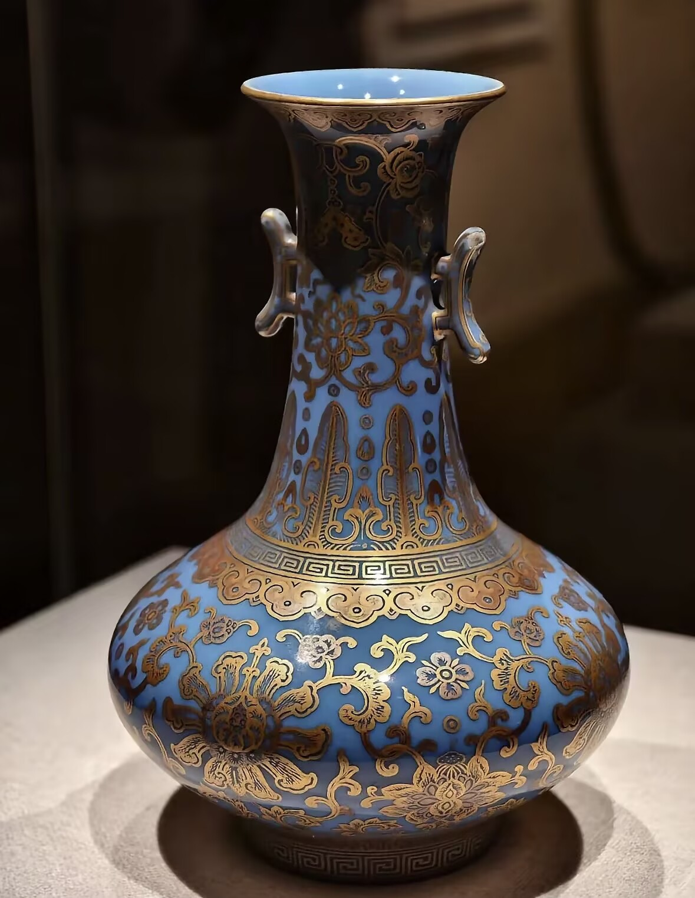
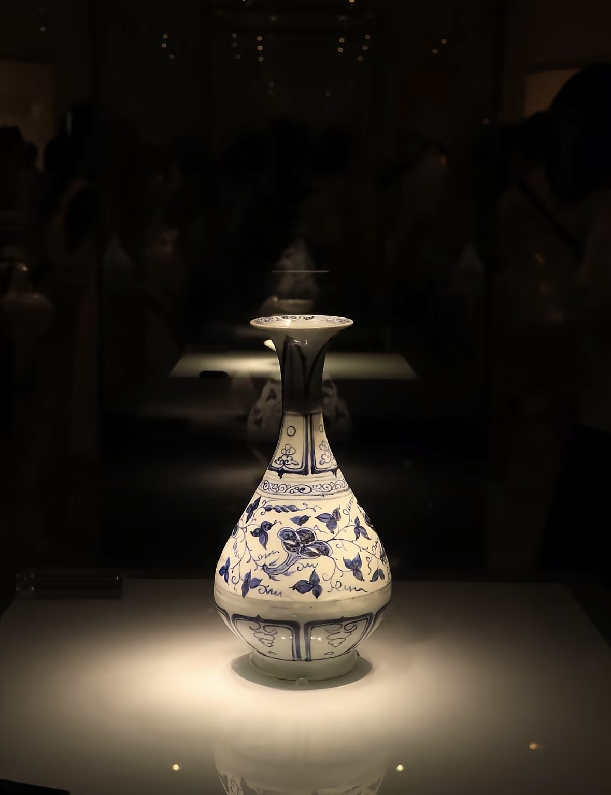

📜 非遗溯源 · 千年瓷都传奇
景德镇制瓷始于汉代，兴于唐宋，盛于明清，历经千年薪火不息，被誉为“世界瓷都”。
景德镇手工制瓷技艺完整保留72道传统工序，青花瓷、粉彩瓷、玲珑瓷、颜色釉并称四大名瓷，2006年入选国家级非遗。
⚙️ 传统制瓷72道工序
【采石制泥】开采高岭土，历经淘洗、揉泥、陈腐，制成细腻瓷泥。
【拉坯利坯】手工旋转成型，修坯定型，器型规整流畅。
【施釉绘画】蘸釉、荡釉、青花绘画，赋予瓷器灵魂与色彩。
【入窑烧制】高温烧制数小时，火中取宝，终成传世瓷器。
🎨 非遗传承与当代创新
景德镇从传统官窑走向文创、国潮、日用瓷、艺术瓷全产业链，吸引全球匠人前来追梦。
年轻陶艺家将现代设计与古法技艺结合，让千年瓷器走进现代生活，走向世界舞台。
一捧泥土，一把窑火，一双巧手，铸就中国陶瓷的千年辉煌。
🎬 制瓷技艺教学视频
制瓷零基础体验
景德镇非遗匠人亲自演示，从揉泥、拉坯到上釉、烧制全过程展示。
直观感受火与土的艺术魅力，了解一件精美瓷器诞生的全部秘密。
🖼 景德镇经典瓷器欣赏


